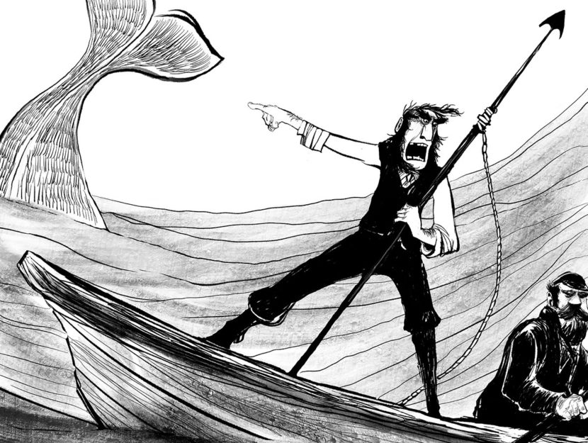

Herman Melville's classic of American Literature 'Moby Dick' is my personal favorite book. The book follows the main charcater Ishmael in his adventures in the world of the whaling industry.
Moby Dick is pretty much the best book ever, and this quote uttered by the mad Captain Ahab captures its awesomeness "to the last I grapple with thee; from hell’s heart I stab at thee; for hate’s sake I spit my last breath at thee". This Line is double intense when you consider the fact that Ahab is more incensed by what the whale stands for in his own mind than the actual whale itself.
The American metal band Mastodon did an entire concept album about the book Moby Dick, thats what this song is from. The album is called Leviathan.